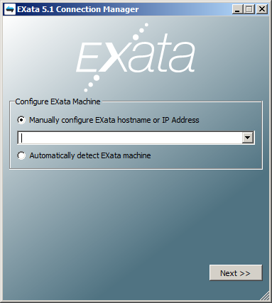

3.3 Testing Connection Manager on Windows To test the Connection Manager installation, start Connection Manager by doing one of the following: • Double-click the Connection Manager icon on the Windows desktop. • Select Start > All Programs > Scalable > EXata-Connection-Manager 5.1 > Connection Manager 5.1. • Navigate to the directory where Connection Manger is installed, right click on exata-connection-manager.exe and select Run as administrator. The following startup screen is displayed when Connection Manager starts: 